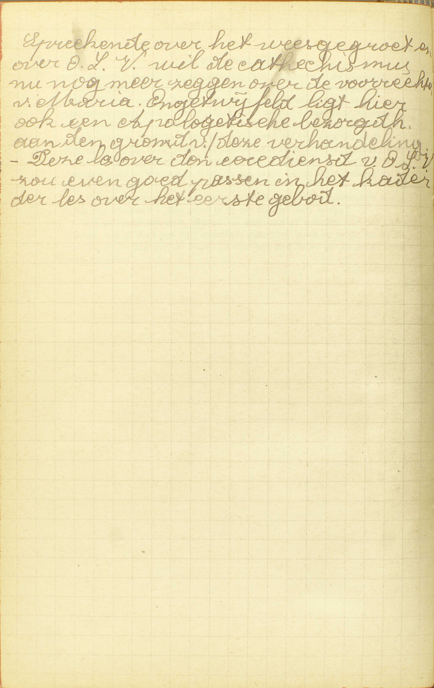
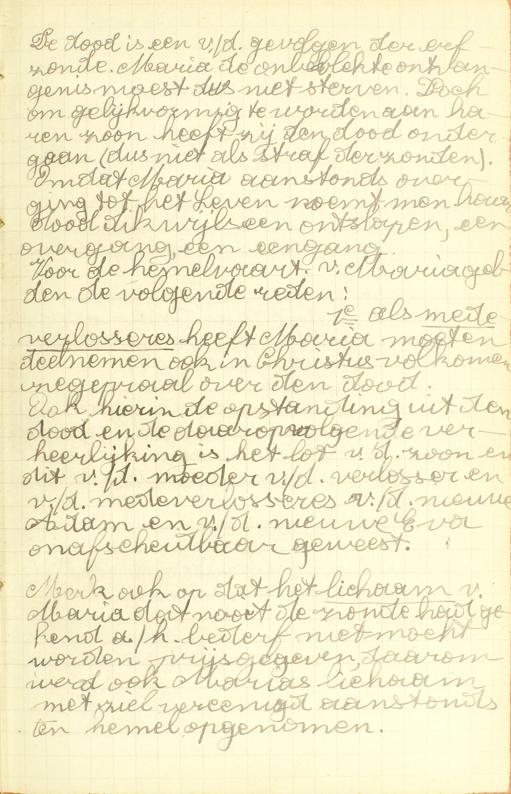
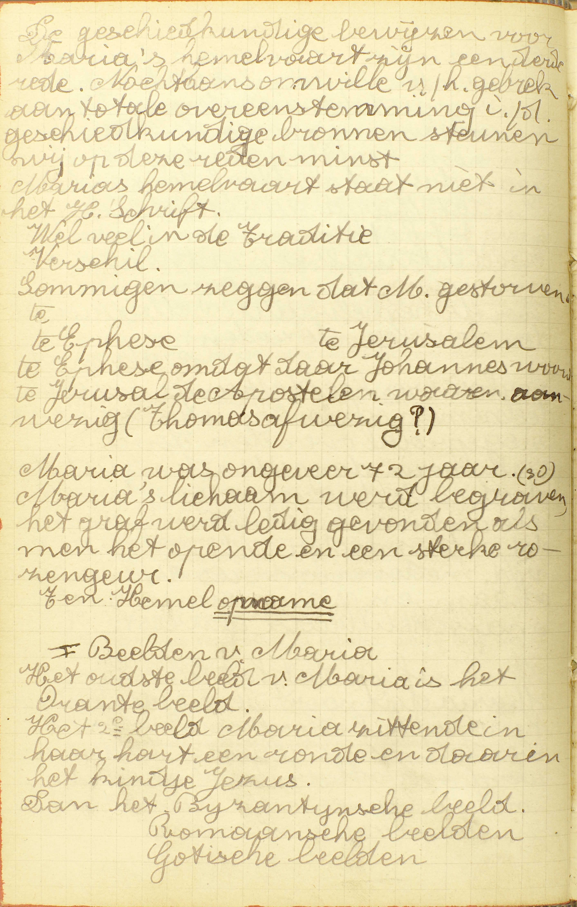
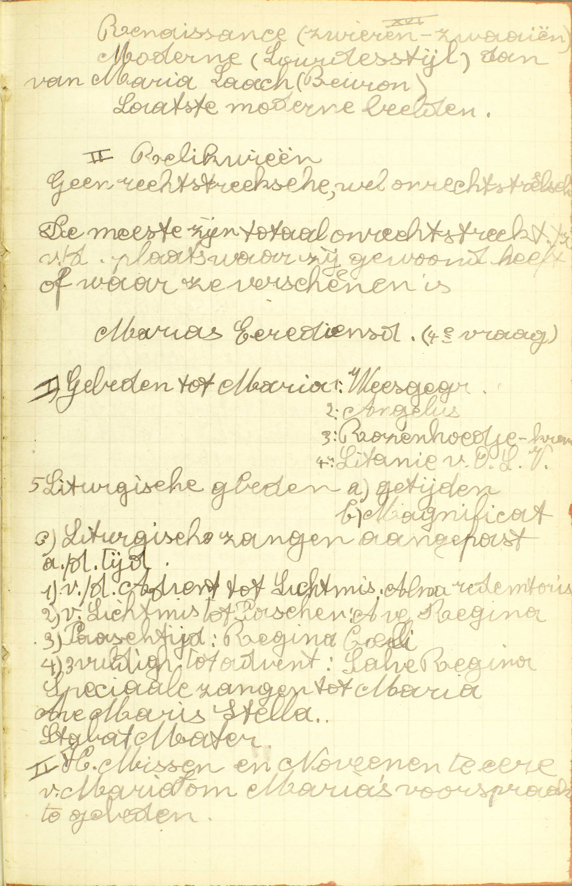
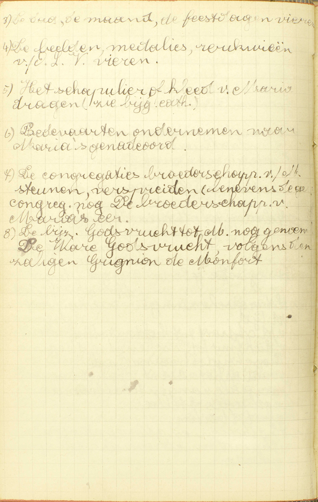
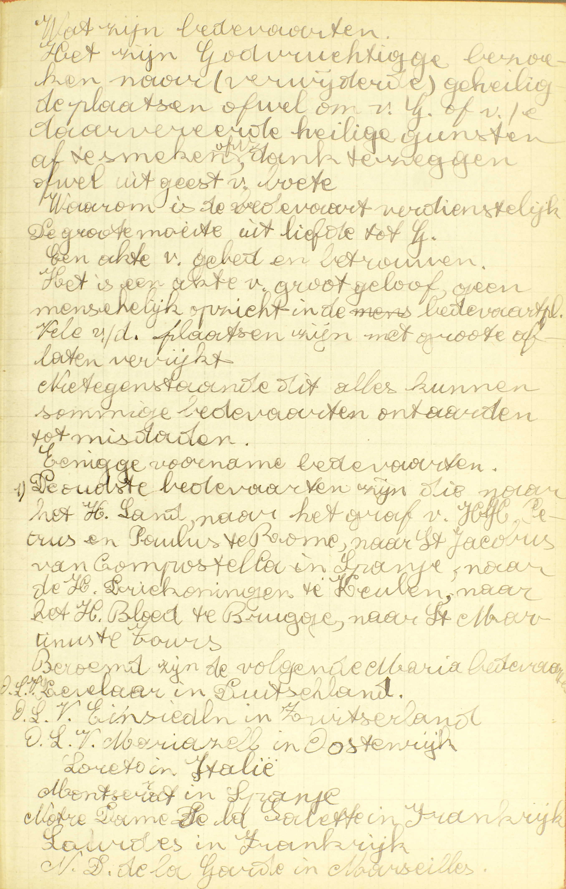
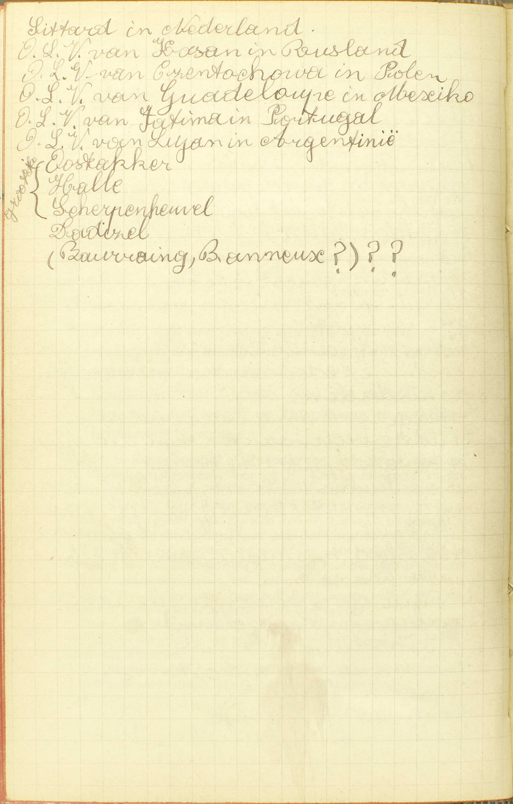
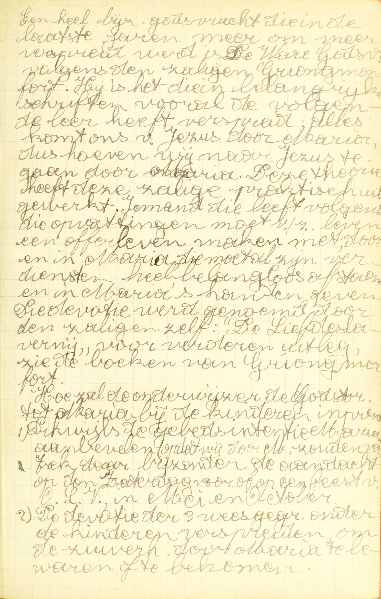

BEKNOPTE VERKLARING
van de
MECHELSE CATECHISMUS
ten gebruike van het middelbaar onderwijs
TWEEDE DEEL
–
NEGENTIENDE LES
Van de eer en aanroeping van de H. Maagd Maria
| 1. De plaats waar de H. Maagd nu is | Waar is Onze Lieve Vrouw nu? | |||||
| Is de Heilige Maagd in de kerken niet? | ||||||
| 2. De manier op dewelke de H. Maagd ons helpt | In wat manier helpt ons de Heilige Maagd? | |||||
| 3. De manier om met vrucht Maria te eren en te aanroepen | Om door Onze Lieve Vrouw te verkrijgen, hetgene wij van doen hebben, moeten wij haar dikwijls en godvruchtig aanroepen, zeggende het Wees Gegroet en andere gebeden | Hoe zal ik mijn gebed allerbest aangenaam maken aan de H. Maagd? | ||||
| Het Rozenhoedje, ’t welke een bijzonder gebed is om Maria te eren en te aanroepen | Mishaagt aan God of aan Maria de manier van enige gebeden dikwijls te herhalen, gelijk wij doen lezende het Rozenhoedje? | |||||
| Wat kracht is er in de tekenen of kralen van het Rozenhoedje? | ||||||
| Is er bijgeloof gelegen in het getal van het Rozenhoedje? | ||||||
 Sprekende over het weesgegroet en over O.L.V. wil de catechismus nu nog meer zeggen over de voorrechten van Maria. Ongetwijfeld ligt hier ook een apologetische bezorgdheid aan de grondslag van deze verhandeling. Deze les over de eredienst van O.L.V. zou even goed passen in het kader van de les over het eerste gebod. In de voorgaande les heeft de Catechismus gesproken van een bijzonder gebed tot Maria, te weten, van het Wees Gegroet; nu handelt hij van de eer en aanroeping van Maria in ’t algemeen, en wel omdat haar verering een grote middel is ter zaligheid.
Waar is Onze Lieve Vrouw nu?
Zij is met ziel en lichaam in de hemel verheven boven alle schepselen

De dood is een van de gevolgen van de erfzonde. Maria de
onbevlekte ontvangenis moest dus niet sterven. Doch om
gelijkvormig te worden aan haar zoon, heeft zij de dood
ondergaan (dus niet als straf voor de zonden). Omdat Maria
aanstonds overging tot het Leven, noemt men haar dood
dikwijls een ontslapen, een overgang, een eengang. Voor de
hemelvaart van Maria gelden de volgende redenen: 1ᵉ Als
medeverlosseres heeft Maria moeten deelnemen ook in
Christus’ volkomen zegepraal over de dood. Ook hierin de
opstanding uit de dood en de daaropvolgende verheerlijking
is het lot van de zoon en dit van de moeder van de verlosser
en van de medeverlosseres, van de nieuwe Adam en van de
nieuwe Eva, onafscheidbaar geweest.
Merk ook op dat het
lichaam van Maria dat nooit de zonde had gekend aan
het bederf niet mocht worden prijsgegeven, daarom werd ook
Maria’s lichaam met ziel verenigd aanstonds ten hemel
opgenomen.  De
geschiedkundige bewijzen voor Maria’s hemelvaart zijn een
derde reden. Nochtans omowille van het gebrek aan totale
overeenstemming in de geschiedkundige bronnen, steunen wij
op deze reden het minst. Maria’s hemelvaart staat niet in de
heilige Schrift. Wel in de Traditie. Verschil: sommigen
zeggen dat Maria gestorven is te Efese (om dat daar Johannes
woonde) of te Jeruzalem (de Apostelen waren aanwezig, Thomas
afwezig?). Maria was ongeveer 72 jaar. Maria’s lichaam werd
begraven, het graf werd leeg gevonden als men het opende met
een sterke rozengeur. Ten Hemel Opname.
I.
Beelden van Maria
Het oudste beeld van Maria is het
Orantebeeld. Het 2ᵉ beeld Maria zittende in haar hart een
ronde en daarin het kindje Jezus. Dan het Byzantijnse beeld.
Romaanse beelden. Gotische beelden.
 Renaissance
(zwieren-zwaaien). Moderne (Lourdesstijl) dan van Maria
Laach (Beuron). Laatste moderne beelden.
II. Reliquieën.
Geen rechtstreekst, wel onrechtstreekse. De meeste zijn
totaal onrechtstreeks, t.t.z. van de plaats waar wij gewoond
heeft of waar zij verschenen is.
Maria’s
eredienst
I. Gebeden tot Maria: 1) Weesgegroet. 2)
Angelus. 3) Rozenhoedje, -krans. 4) Litanie van O.L.V. 5)
Liturgische gebeden: a) getijden, b) magnificat, c)
liturgische gezangen aangepast aan de tijd: 1) van de Advent
tot Lichtmis: Alma Redemptoris, 2) van Lichtmis tot Pasen:
Ave Regina, 3) Paastijd: Regina Cœli, 4) H. Drievuldigheid
tot Advent: Salve Regina. Speciale zangen tot Maria: Ave
Maris Stella, Stabat Mater.
II. Heilige Missen en
Novenen ter ere van Maria om Maria’s voorspraak te
gebeden. V. Waar is Maria, de Moeder van
Christus, sedert haar dood?
A. Zij is in de hemel, en dat 1° met ziel en lichaam: dus niet gelijk de andere Heiligen, die daar alleen met hun ziel zijn, en er slechts na het Laatste Oordeel met hun lichaam zullen binnentreden; 2° verheven boven alle schepselen: al de Engelen en Heiligen in glorie overtreffende.
Onze Lieve Vrouw is in de hemel met ziel en lichaam, omdat zij met de gans bijzondere waardigheid van Moeder Gods bekleed is; zij is daar verheven boven alle schepselen, omdat zij, gedurende haar leven, deze allen in heiligheid en verdiensten overtroffen heeft.
Is de Heilige Maagd in de kerken niet?
In de kerken zijn maar haar beelden en gedachtenissen
V. Is de H. Maagd in de kerken niet wezenlijk of persoonlijk tegenwoordig, gelijk Christus daar is in het H. Sacrament?
A. Zij is daar niet zo tegenwoordig: in de kerken zijn maar — haar beelden: schilderijen of standbeelden die haar voorstellen, — en gedachtenissen: en andere voorwerpen die onze aandacht op haar trekken, zoals reliquieëen van haar kleren, van haar woning, van de dingen die zij in verschijningen aangeraakt heeft, enz.
In wat manier helpt ons de Heilige Maagd?
Door haar verdiensten en gebeden, die zij God voor ons opdraagt
A. De H. Maagd kan ons helpen, niet gelijk God, door eigen macht, maar op de twee volgende wijzen:
1° Door haar verdiensten: door de verdienstelijke werken die zij op deze wereld volbracht heeft; want, sedert haar dood, kan zij niets meer verdienen. Uit die verdienstelijke werken kan ons enkel de vrucht van voldoening toegepast worden; de twee andere vruchten, namelijk die van smeeking en de vermeerdering van de heiligmakende genade heeft de H. Maagd zelve genoten. Hare voldoeningen worden ons toegepast óf rechtstreeks op haar vraag, óf door de aflaten. (13ᵉ les, v. 2, 3 en 4. — 16ᵉ les, v. 2.)
2° Door haar gebeden die zij God voor ons opdraagt: door de samenspraken die zij met God in de hemel heeft, waarin zij van Hem allerhande gunsten voor ons vraagt. Ongetwijfeld wordt de H. Maagd veel zekerder verhoord dan al de andere Heiligen, om reden van haar bijzondere heiligheid alsmede van haar titel van Moeder Gods; haar voorspraak heeft zelfs zoveel kracht, dat zij uit die hoofde almachtig genoemd wordt.
Wat middel weet gij om te verkrijgen door Onze Lieve Vrouw, hetgene gij van doen hebt?
Haar dikwijls en godvruchtig te aanroepen, zeggende de Wees Gegroet en andere gebeden.
 3) De dag, de maand, de feestdagen vieren. 4) De beelden, medailles, reliquieën van O.L.Vrouw vieren. 5) Het schapulier of kleed van Maria dragen. 6) Bedevaarten ondernemen naar Maria’s genadeoord. 7) De congregaties, broederschappen van Maria steunen, verspreiden (benevens de congregaties nog de broederschappen van Maria’s eer). 8) De bijzondere godsvrucht tot Maria nog genoemd De Ware Godsvrucht, volgens de zalige Grignion de Montfort. A. De middel om door Onze Lieve Vrouw te verkrijgen hetgene wij van doen hebben, is haar te aanroepen: haar te erkennen als verheven zijnde boven alle schepselen, diensvolgens als koningin van hemel en aarde, en haar te smeken om voor óns te willen bidden, Om door dit aanroepen van Maria veel vrucht te bekomen, is het niet genoeg het van tijd tot tijd eens te doen; wij moeten het — dikwijls: dagelijks en zelfs meermaals daags, en godvruchtig: met bereidwilligheid en derhalve met eerbiedigheid en aandachtigheid doen, zeggende het Wees Gegroet: dit gebed is, onder opzicht van oorsprong zowel als van inhoud, het volmaaktste om Maria te aanroepen: zijn edele oorsprong hebben wij reeds in de 3ᵉ vraag van de voorgaande les leren kennen, en, wat de inhoud aangaat, het drukt de grootste eretitels van Maria uit, en vraagt dat zij ons nu en in het uur van de dood zou bijstaan; — en andere gebeden, Maria bijzonder aangenaam, zoals bare litanie en haar kerkelijk officie.
Hoe zal ik mijn gebed allerbest aangenaam maken aan de Heilige Maagd?
Voegende bij het gebed enige goede werken tot haar eer, als vasten, bedevaarten en andere diergelijke

Wat zijn bedevaarten
Het zijn Godvruchtige bezoeken
naar (verwijderde) geheiligde plaatsen ofwel om van God of
van een daar vereerde heilige gunsten af te smeken, ofwel om
dank te zeggen, ofwel uit geest van boete.
Waarom is de
bedevaart verdienstelijk. De grote moeite uit liefde tot
God. Een akte van gebed en betrouwen. Het is een akte van
groot geloof, geen menselijke opzicht in de bedevaartplaats.
Vele van de plaatsen zin met grote aflaten verrijkt.
Niettegenstaande dit alles kunnen sommige bedevaarten
ontaarden tot misdaden.
Enige voorname
bedevaarten.
De oudste bedevaarten zijn die naar het
Heilig Land, naar het graf van Jezus Christus, Petrus en
Paulus te Rome, naar Sint Jacob van Compostella in Spanje,
naar de Heilige Driekoningen te Keulen, naar het Heilig
Bloed te Brugge, naar Sint Martinus te Tours. Beroemd zijn
de volgende Mariabedevaarten: O.L.V. Kevelaar in Duitsland,
O.L.V. Einsiedeln in Zwitserland, O.L.V. Mariazell in
Oostenrijk, Loreto in Italië, Montserrat in Spanje, Notre
Dame de la Salette in Frankrijk, Lourdes in Frankrijk, Notre
Dame de la Garde in Marseille.
 Sittard in Nederland.
O.L.V. van Kazan in Rusland. O.L.V. van Częstochowa in
Polen. O.L.V. van Guadalupe in Mexico. O.L.V. van Fatima in
Portugal. O.L.V. van Luján in Argentinië. Oostakker, Halle,
Scherpenheuvel, Dadizele, Bauraing, Banneux. A.
Voegende bij het gebed enige goede werken — tot haar
eer, dat is, tot voldoening van haar begeerte, de
enige die zij heeft, van de geboden en raden Gods te zien
volgen; dit inzicht immers strekt tot haar eer, daar men
daardoor haar heiligheid en verhevenheid erkent en zich aan
haar onderwerpt. Goede werken die men ter ere van de H.
Maagd kan doen, zijn b.v. vasten, waaronder
men niet uitsluitend het eigenlijk vasten, gelijk de H. Kerk
het voorschrijft, maar ook alle versterving te verstaan
heeft die men zich vrijwillig oplegt, of ten minste
goedwillig aanvaardt; — bedevaarten:
heilige reizen tot afgelegen plaatsen, waar God, de H. Maagd
of de Heiligen op een bijzondere wijze geëerd worden; —
en andere diergelijke, zoals te biechten
gaan, ter ere van de H. Maagd licht ontsteken, en zelfs al
onze goede en betamelijke werken, als wij ze doen met het
inzicht van de wil Gods te volbrengen.
Mishaagt aan God of aan Maria de manier van enige gebeden dikwijls te herhalen, gelijk wij doen lezende het Rozenhoedje?
Geenszins; want Christus heeft ons geleerd te volharden in het roepen en kloppen om te verkrijgen hetgeen wij begeren
V. Het Rozenhoedje of Rozenkrans, een gebed door de H. Dominicus ingevoerd, door de H. Kerk goedgekeurd en de gelovigen levendig aanbevolen, bestaat 1° uit vijftien tientjes of vijftienmaal één Onze Vader met tien Wees Gegroeten en één Glorie zij de Vader, de Zoon en de H. Geest; 2° uit een korte overweging, bij ieder tientje, over een van de zogenoemde vijf blijde, vijf droeve en vijf glorieuze mysteriën van onze verlossing. De verzameling van die gebeden heet Rozenhoedje of Rozenkrans, omdat zij als ’t ware een kroon van rozen uitmaakt, die wij Maria aanbieden. Het Rozenhoedje heet ook Paternoster omdat de Pater Noster of Onze Vader er het waardigste deel van is.
Gewoonlijk bidt men van de helen Rozenkrans enkel een derde deel, bestaande óf uit de vijf blijde, óf uit de vijf droeve, óf uit de vijf glorieuze mysteriën.
De Catechismus vraagt of de Rozenkrans, waarin wij zo dikwijls hetzelfde gebed herhalen, aan God of aan Maria niet mishaagt.
A. Hij mishaagt hun — geenszins, want Christus heeft ons geleerd, dat wij, — om te verkrijgen hetgeen wij begeren, dienen te volharden in het roepen en kloppen, of moeten bidden met volstandigheid.
Wat kracht is er in de tekenen of kralen van het Rozenhoedje?
De tekenen hebben geen kracht, maar dienen alleen tot gedachtenis van het getal, dat wij God en zijn H. Moeder willen opdragen
V. Hebben de kralen van de Rozenkrans uit hun natuur enige kracht om ons een goddelijke gunst te geven of te verkrijgen?
A. De tekenen: de kralen — hebben uit hun natuur hoegenaamd geen kracht, maar dienen alleen tot gedachtenis van het getal: tot hulp in het optellen van heft getal gebeden, — dat wij God en zijn H. Moeder willen opdragen of aanbieden.
De Catechismus spreekt hier uitsluitend van de ongewijde Rozenkransen, want de gewijde dienen, uit hoofde van hun wijding, om aflaten alsook om van God hulp en bijstand te bekomen. De H. Kerk kan zowel een Rozenkrans wijden als een gebouw, een plaats, een kerk of andere zaak.
Is er bijgeloof gelegen in het getal van het Rozenhoedje?
Geenszins; maar het wordt uitsluitend genomen tot een geestelijke betekenis, en daarom mag het wel verminderd of vermeerderd worden
V. Schrijven de gelovigen aan het getal gebeden (6e v.) waaruit de Rozenkrans bestaat, geen kracht toe, die het niet heeft noch van God, noch uit zichzelf, noch door de instelling van de H. Kerk? (21ᵉ les, v. 6.)
A. Geenszins: het bevat geen bijgeloof, — het wordt genomen, niet als had het een bijzondere kracht, die het wezenlijk niet heeft, — maar uitsluitend tot een geestelijke betekenis: uitsluitend om ons een geestelijke, een godsdienstige zaak te herinneren, namelijk, de gewoonte, bij heilige eremijten en dienaren Gods uit vroegere tijden, van dagelijks de 150 psalmen van David te lozen; — en daarom, daar aan dit getal geen bijzondere kracht erkend wordt, — mag het wel verminderd of vermeerderd worden, zonder dat het gebed er zijn waarde en kracht door verliest. Nochtans moet men, om de aflaten te verdienen die de H. Kerk aan de Rozenkrans gehecht heeft, het getal gebeden zeggen door haar geëist. (13ᵉ les, v. 6.)
VRAGEN

Een heel bijzondere godsvrucht die in de laatste jaren
meer om meer verspreid werd, is De Ware Godsvrucht
volgens de zalige Grignion de Montfort. Hij is het die in
belangrijke schriften vooral de volgende leer heeft
verspreid: alles komt ons van Jezus door Maria, dus hoeven
wij naar Jezus te gaan door Maria. Deze theorie heeft deze
zalige praktisch uitgewerkt. Iemand die leeft volgens die
opvattingen moet van zijn leven een offerleven maken met,
door en in Maria, die moet zijn al verdiensten heel
belangeloos afstaan en in Maria’s handen geven. Die devotie
werd genoemd door de zalige zelf: “De Liefdeslavernij”, voor
verdere uitleg, zie de boeken van Grignion de Montfort.
Hoe zal de onderwijzer de Godsvrucht tot Maria bij de
kinderen inprenten? 1) Dikwijls de gebedsintentie tot Maria
aanbevelen, trek dan bijzonder de aandacht op de zaterdag
voor of op een feest van O.L.V. in mei en oktober. 2) De
devotie van de drie weesgegroeten onder de kinderen
verspreiden om de zuiverheid door Maria te bewaren of te
bekomen. Hoe is deze les met de voorgaande
verbonden? — Waarvan spreekt deze les? — Hoe wordt zij
verdeeld? — Wat onderzoekt de Catechismus in ieder van die
delen ?
Leg de vraag uit: Waar is Onze Lieve Vrouw nu? — Noem de plaats waar Onze Lieve Vrouw nu is? — Zeg, met de woorden van de Catechismus, hoe zij daar is,en leg die woorden uit. — Waarom is zij daar op de gezegde wijze?
Welk is de zin van de vraag: Is de H. Maagd in de kerken niet? — Is de H. Maagd wezenlijk of persoonlijk in de kerken? — Hoe is zij daar? — Wat verstaat men door haar beelden en gedachtenissen? — Welk verschil is er tussen de manier op welke Christus en die op welke Maria in de kerken is?
Helpt de H. Maagd ons rechtstreeks door haar eigen macht? — Wie helpt ons op die wijze? — Door hoeveel dingen en door welke helpt zij ons? — Wat verstaat men hier door haar verdiensten, en hoe worden deze ons toegepast? — Wat verstaat men door de gebeden die zij aan God voor ons opdraagt? — Hoe zeker is de voorspraak van de H. Maagd?
Welk werk wordt er vereist„om van Maria te verkrijgen hetgene wij van haar begeren? — Zeg, met de woorden van de Catechismus, hoe wij dat werk moeten doen, om door Maria te verkrijgen hetgene wij begeren. — Leg die woorden uit.
Wat is er te doen om ons gebed zeer aangenaam te maken aan de H. Maagd? — Wat is een goed werk doen ter ere van de H. Maagd? — Welke goede werken stelt de Catechismus hier voor? — Leg zijn woorden uit.
Wat is het Rozenhoedje? — Hoe wordt het verdeeld? … Hoe wordt het gewoonlijk gebeden? — Van waar komt de naam Rozenhoedje? — Hoe wordt het nog genoemd en waarom? — Wat vraagt de Catechismus, als hij zegt: Mishaagt aan God of aan Maria de manier van enige gebeden dikwijls te herhalen, gelijk wij doen lezende het Rozenhoedje? — Waarom mishaagt die manier niet? — Leg de reden uit.
Geef de zin van de vraag: Wat kracht is er in de tekenen of kralen van het Rozenhoedje? — Wat kracht hebben nu deze kralen of tekenen? — Zeg, met de woorden van de Catechismus, waartoe zij dienen. — Leg die woorden uit. — Van welke Rozenkransen spreekt hier de Catechismus? — Hebben de gewijde Rozenkransen ook geen kracht? — Welk is hun kracht en waaruit hebben zij deze?
Wat vraagt de Catechismus als hij zegt: Is er bijgeloof gelegen in het getal van het Rozenhoedje? — Welk is dat getal? — Zeg, met de woorden van de Catechismus, waarom er geen bijgeloof in dit getal is. — Waartoe wordt het gebruikt? — Wat betekent de Catechismus, als hij zegt: en daarom mag het wel verminderd of vermeerderd worden? — Is er een zeker getal vereist om de aflaten van een gewijden paternoster te verdienen, en waarom ?